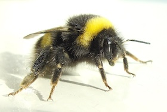
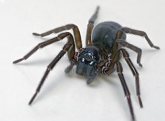

🐜 Ants

Ants are eusocial insects of the family Formicidae and, along with the related wasps and bees, belong to the order Hymenoptera. Ants evolved from wasp-like ancestors in the Cretaceous period, about 140 million years ago.
🪲 Beetles

Beetles are insects that form the order Coleoptera, in the superorder Endopterygota. Their front pair of wings are hardened into wing-cases, elytra, distinguishing them from most other insects.
🦋 Butterflies

Butterflies are insects in the macrolepidopteran clade Rhopalocera from the order Lepidoptera, which also includes moths. Adult butterflies have large, often brightly coloured wings, and conspicuous, fluttering flight.
🪲 Dragonflies

A dragonfly is an insect belonging to the order Odonata, infraorder Anisoptera. Adult dragonflies are characterized by large, multifaceted eyes, two pairs of strong, transparent wings.
🦋 Moths

Moths are a paraphyletic group of insects that includes all members of the order Lepidoptera that are not butterflies, with moths making up the vast majority of the order.
🐝 Wasps

A wasp is any insect of the narrow-waisted suborder Apocrita of the order Hymenoptera which is neither a bee nor an ant; this excludes the broad-waisted sawflies (Symphyta), which look somewhat like wasps but are in a separate suborder.